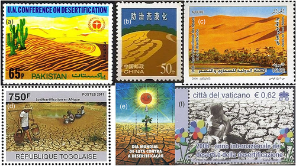
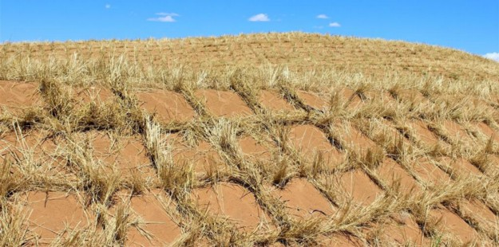
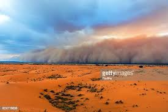
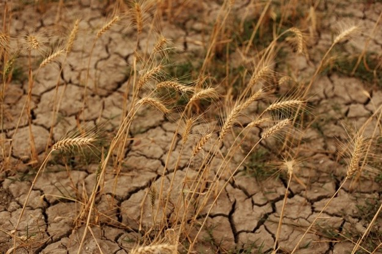
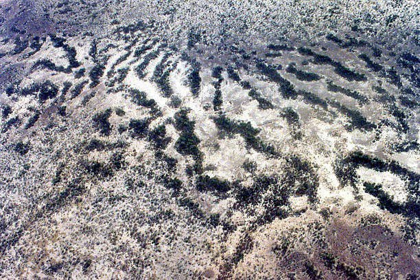

Desertification, in short, is when land that was of another type of biome turns into a desert biome because of changes of all sorts. A huge issue that many countries have is the fact that there are large pockets of land that are going through a process that is known as desertification.
Another thing Overgrazing is the major cause of desertification worldwide. Other factors that cause desertification include urbanization, climate change,overuse of groundwater, deforestation, natural disasters, and till age practices in agriculture that make soils more vulnerable to wind. Desertification affects topsoil, groundwater reserves, surface runoff, human, animal, and plant populations. Water scarcity in drylands limits the production of wood, crops, forage, and other services that ecosystems provide to our community.
According to UNESCO, one-third of world’s land surface is threatened by desertification, and across the world, it affects the livelihood of millions of people who depend on the benefits of ecosystems that drylands provide. Desertification is another major environmental concern and a significant barrier to meeting basic human needs in drylands and is being constantly threatened by increases in human pressures and climatic variability. In this article, we’re going to give you an idea as to what are the causes of desertification, the effects that desertification has, and what we can do in order to deal with the problem at hand. Let’s take a closer look at all of these topics.
Sand and dust storms — There has been a 25% increase in global annual dust emissions between the late nineteenth century to present day. The increase of desertification has also increased the amount of loose sand and dust that the wind can pick up ultimately resulting in a storm. For example, dust storms in the Middle East “are becoming more frequent and intense in recent years” because “long-term reductions in rainfall promot[ing] lower soil moisture and vegetative cover” and dust storms can contribute to certain respiratory disorders such as pneumonia, skin irritations, asthma and many more.They can pollute open water, reduce the effectiveness of clean energy efforts, and halt most forms of transportation.
Dust and sand storms can have a negative effect on the climate which can make desertification worse. Dust particles in the air scatter incoming radiation from the sun. The dust can provide momentary coverage for the ground temperature but the atmospherictemperature will increase. This can disform and shorten the life time of clouds which can result in less rainfall.
Food security — Global food security is being threatened by desertification and overpopulation. The more the population grows, the more food that has to be grown. The agricultural business is being displaced from one country to another. For example, Europe on average imports over 50% of its food. Meanwhile, 44% of agricultural land is located in dry lands and it supplies 60% of the world’s food production. Desertification is decreasing the amount of sustainable land for agricultural uses but demands are continuously growing. In the near future,the demands will overcome the supply.
Vegetation patterning — As the desertification takes place, the landscape may progress through different stages and continuously transform in appearance. On gradually sloped terrain, desertification can create increasingly larger empty spaces over a large strip of land, a phenomenon known as “brousse tigrée”. A mathematical model of this phenomenon proposed by C. Klausmeier attributes this patterning to dynamics in plant-water interaction. One outcome of this observation suggests an optimal planting strategy for agriculture in arid environments.